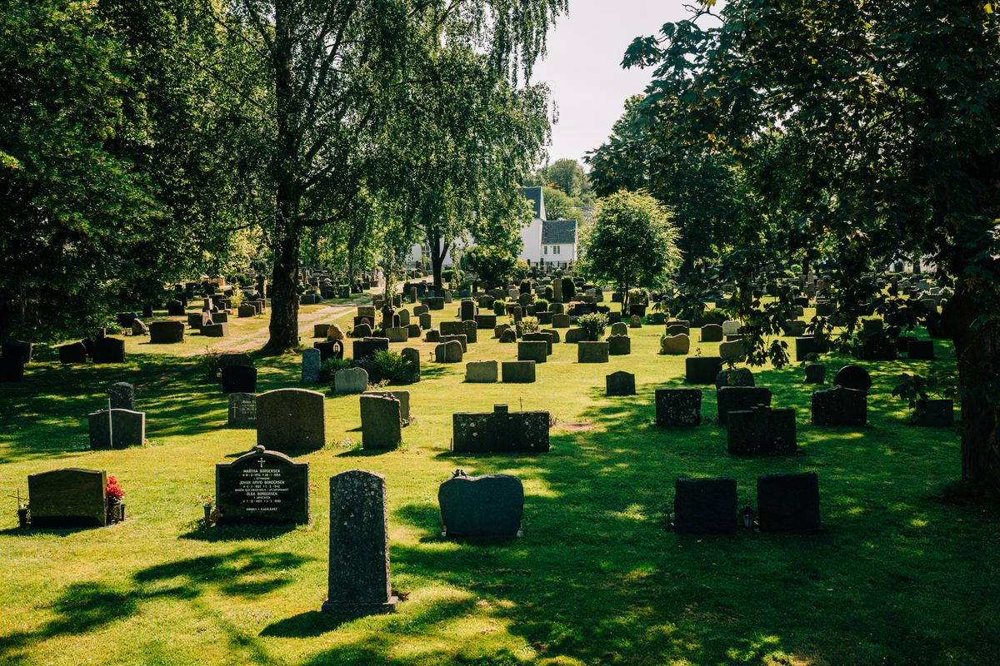
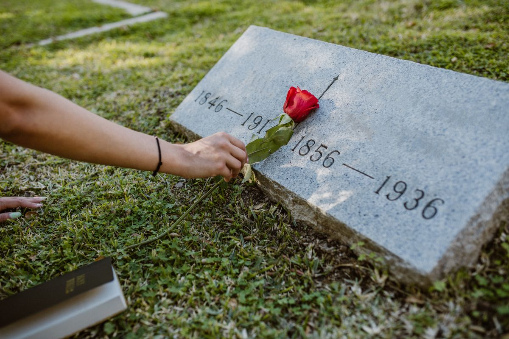
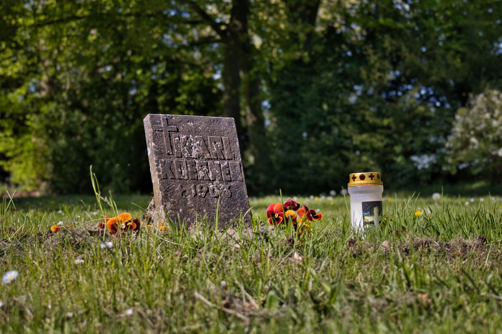

Memorial Park and Mausoleum, Metairie LA
Providence Memorial Park & Mausoleum

A family-owned perpetual care cemetery in Metairie, with cremation gardens, mausoleum entombment, and private family estates.
About
Providence Memorial Park and Mausoleum is a family-owned perpetual care cemetery in Metairie, Louisiana, at 8200 Airline Drive. The park offers cremation gardens, mausoleum entombment, traditional in-ground burials, private family estates, and companion plots. Hours are Tuesday to Thursday 9:00 AM to 2:00 PM and Friday 9:00 AM to 1:00 PM. Call (504) 464-0541 to ask about arrangements.
Burial and memorial options
Call to ask about arrangements
Providence Memorial Park and Mausoleum is at 8200 Airline Drive in Metairie. Hours are Tuesday to Thursday 9:00 AM to 2:00 PM and Friday 9:00 AM to 1:00 PM. Call (504) 464-0541 to ask about burial and memorial options.
Gallery


All gallery photos are stock photos, labeled as such. They show peaceful cemetery grounds, not this memorial park.
Visit
Address: 8200 Airline Dr, Metairie, LA 70003
Hours: Tuesday to Thursday 9:00 AM to 2:00 PM. Friday 9:00 AM to 1:00 PM.
Phone: (504) 464-0541
Contact
Providence Memorial Park & Mausoleum serves Metairie, LA. Questions? Call (504) 464-0541.